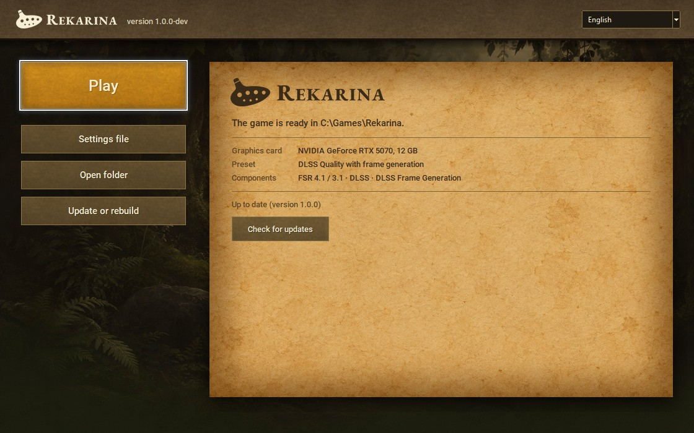
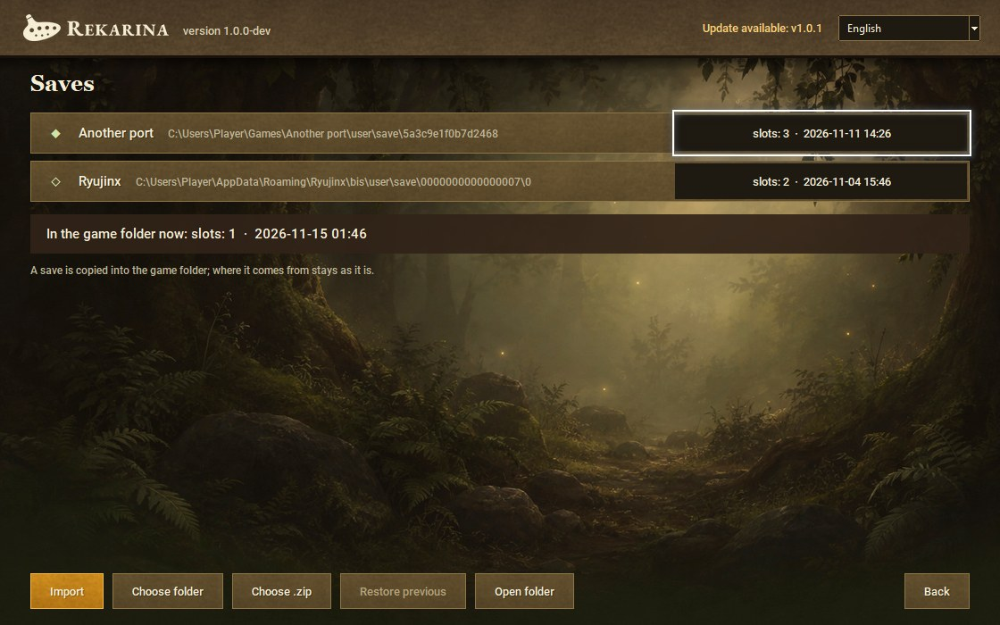
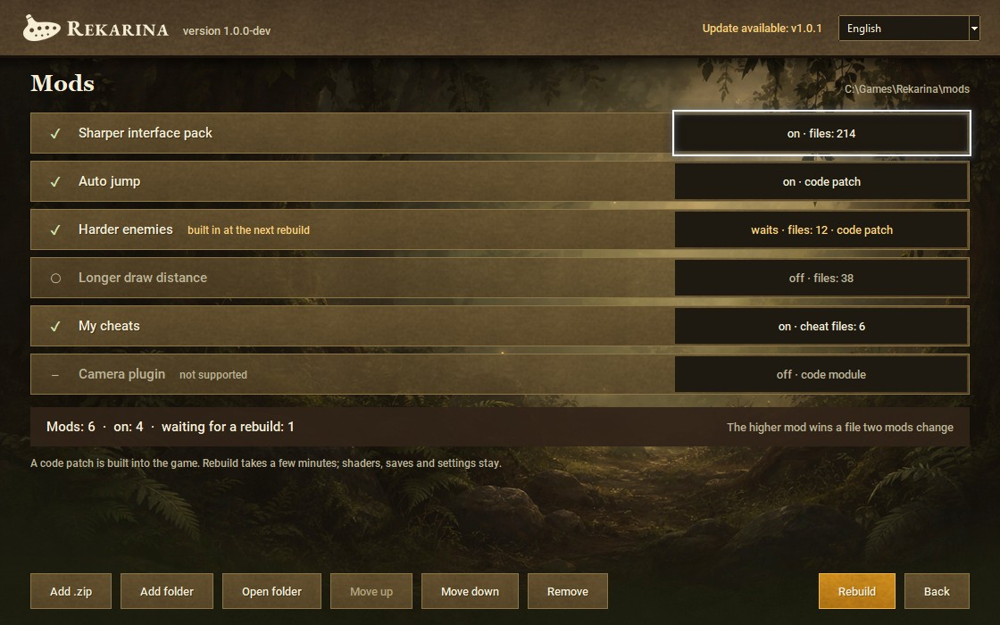

A native PC port made by static recompilation, not emulation.
Built on your own PC from your own copy of the game: 100+ fps, a sharp native picture, DLSS and FSR, a mod manager and save import.
No game files are included, and none are downloaded. You need your own legally obtained copy of the game, dumped from your own console.

What you get
Native code, not emulation
100+ fps where the console runs at 60, with a frame limit up to 240 or the monitor's rate. There is no CPU emulator and no JIT at run time.
Smooth above 60 fps
The game's own clock follows real time, and the places where it counted frames are corrected: water ripples, the pick-up counter, physics steps on moving platforms, movie cutscenes.
A sharp native picture
At any 16:9 resolution, plus 21:9 and 32:9 with the camera and the interface in that shape.
DLSS, DLAA and FSR 4.1
NVIDIA DLSS and DLAA with a choice of model, and DLSS Frame Generation on RTX 40 and 50 cards. AMD FSR 4.1 on the Radeon cards that run it and FSR 3.1 on any other GPU, both with frame generation. For older cards and handhelds, AMD FSR 1 scales a smaller 3D scene up without motion vectors or history, at the same small cost on every GPU. The launcher fetches each vendor's library from its official repository; nothing of theirs is bundled.
Your save comes along
The launcher's Saves page finds a save in the folders of another port of the game or of an emulator, or takes one from a folder or a .zip you pick, and copies it into the game. The save it replaces is kept, and one press brings it back.
Mods, with a manager
Turn mods on and off and set their order in the launcher or on the game's own Mods tab; add one from a .zip or a folder. Texture, model and text mods load as they are, cheats turn on one by one, and code patches (.ips, .pchtxt) are built into the game by a rebuild of a few minutes that keeps saves, settings and shaders.
Shaders ready before you play
The launcher prepares the game's shaders and pipelines while it builds, and its textures if you leave that step on, so the game starts in a few seconds and does not stop to build them in the middle of play.
Settings that apply while you play
The in-game menu (Esc or F1) is drawn in the game's own menu style, with a live picture beside the rows, so a change to the render scale, sharpening, colour or frame limit shows at once. Number settings are bars you drag with the mouse or step with the keys and the pad.
Settings that explain themselves
Where the menu used to describe, it now draws: the picture's whole chain with your values, from the 3D scene through the upscaler to the window; your controller, live, with its sticks over their dead zones; the keyboard with the button each bound key presses; frame times with CPU and GPU time and memory; the card, driver and profile the game runs on.
Your pad, or the keyboard and mouse
Xbox and PlayStation pads, and the console's own controllers with HD rumble and gyro. With several connected, the one you press is the one the game reads. The mouse turns the camera by raw input, exactly as far as you move it, with its own speed for each axis. The button prompts follow the device you use, change in the running game, and the keyboard prompts show the keys you bind.
Older cards and built-in graphics
The launcher picks the first settings from your GPU and its video memory. FSR 1 scales a smaller scene up for built-in graphics and 4 GB cards, and the trees, bushes and grass are drawn on GPUs without mesh shaders.
Skip what you have seen
Every cutscene can be skipped, the three the console keeps unskippable included. An option runs the dialogue on without the pauses between phrases.
Voice acting, music and movies
As on the console: Opus voice lines in nine languages, AV1 cutscenes.
A launcher with updates
It builds the game, shows each step with the time it takes, and installs new releases after checking their signature, rebuilding only what changed; the game itself tells you when one is out.
A problem report in one press
If something goes wrong, the menu or the launcher writes one .zip with the logs, the settings and the computer's details: no saves, no game files, your user name taken out of every path, and nothing is sent anywhere. You attach it where you ask for help.
Also: a texture cache, so ground you have crossed before streams in with far fewer hitches; a screenshot key of its own (F12); a pointer that hides when it rests; sound that can mute while the window is in the background; the menu and the launcher in every language the game has; HDR10 output (experimental); a performance overlay (F10); Discord Rich Presence (off by default). Rekarina is free software under the GPL-3.0.
Performance
Second minute of a run in each place with the camera turning in place; with frame generation the number is frames on screen, the game renders half. A full bar is 240 fps, the game's own ceiling. Running through the field or the market gives 73 to 80 fps on the same machine. NVIDIA GeForce RTX 5070, AMD Ryzen 7 9700X, Windows 11 Pro; a development build of Rekarina 1.0.0.
How it works
-
1Point the launcher at your dumpabout a minute
Start Rekarina.exe. It is the whole launcher in one file: at its first start it asks for a folder, on any disk, and keeps everything there: its tools, the build and the game. Then choose the folder with your game dump.
-
2It builds the gameabout an hour, once
Press Start. The launcher checks the dump, recompiles the game's code, builds the executable, fetches the graphics components for your GPU and prepares every shader the game has, so none of them is built while you play. That takes about an hour on a 16-thread processor and up to two on an 8-thread one. Each step shows how long it has left.
-
3PlayPlay
Saves and settings live in the game folder and survive updates and rebuilds. When a release is out, the launcher offers Update and rebuilds only what changed. Rekarina.exe in the game folder is the game itself; the launcher is one click away through the Rekarina Launcher shortcut beside it, on the desktop and in the Start menu.

The launcher building the game.
Saves and mods

The Saves page lists the saves the launcher found, newest first. Import copies one into the game folder and leaves the original as it was; Choose folder and Choose .zip take a save from anywhere else, and Restore previous brings back the save it replaced.

The Mods page shares its list with the game's Mods tab. The higher mod wins a file two mods change; a mod with a code patch waits for Rebuild, and one that brings compiled code of its own is marked as not supported.
Requirements
NVIDIA RTX cards are what the port is developed and tested on. For AMD and Intel GPUs, see the known issues below.
Help
How you know a download is ours
Every release is signed with the project's key. The launcher installs an update only when that signature fits, so a changed file is refused wherever it came from.
Rekarina.exe has no code-signing certificate, so Windows SmartScreen shows an “unknown publisher” page until enough people have run the file. To be sure the file is the one published here, compare its SHA-256 with the line below.
335501acd50b123d8fe2e20d43af3ae2667de17427d557a4cf4cff9571dfe576In a terminal: certutil -hashfile Rekarina.exe SHA256
Known issues
- AMD GPUs have been run on one integrated Radeon only. A discrete Radeon, a Steam Deck and a ROG Ally have not been run.
- Intel GPUs have never been run.
- On GPUs without mesh shaders the trees, bushes and grass are drawn by a compute stand-in; it has been checked on an NVIDIA card with mesh shaders turned off, not yet on such a GPU.
- A rare GPU crash (“device lost”) in long sessions with many map changes. Its cause is not found yet; the problem report made by the launcher carries what we need to look at it.
- The first frames after a loading screen can hitch for a quarter of a second.
- A shader combination or a foliage pipeline that none of our runs met is built the first time it appears: a few milliseconds for most, up to seconds for a patch of foliage, which is not drawn meanwhile. Our runs went through every map once; boss fights and the rooms deep inside dungeons only partly.
- With 16 GB of memory the prepared textures are not read ahead at the start, so the first visit to a place after a restart of the PC reads them from the disk while you play.
- With another program holding most of the video memory (a video editor, a second game) the frame rate collapses; the game says so at the top of the screen.
- Shadows and trees in the distance can flicker, and some lights inside dungeons. Being worked on.
- The game uses about 15 GB of memory: with 16 GB in the PC it can stutter. Being worked on.
- HDR10 output is experimental and off by default.
- Releases are Windows only for now. A native Linux build is in development; it has not run on a Linux PC with a graphics card or on a Steam Deck yet.
One post per problem in the help forum, with the log file from the logs folder beside the game.